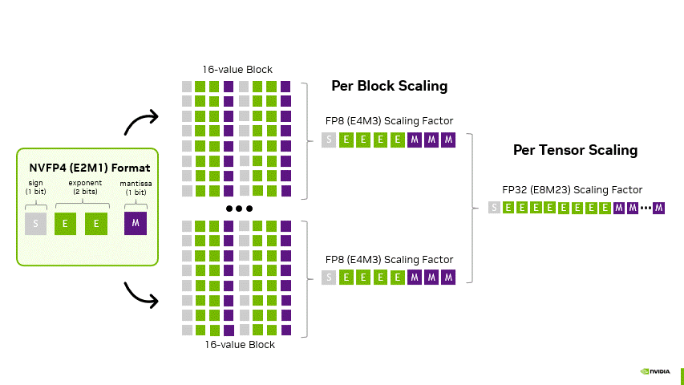
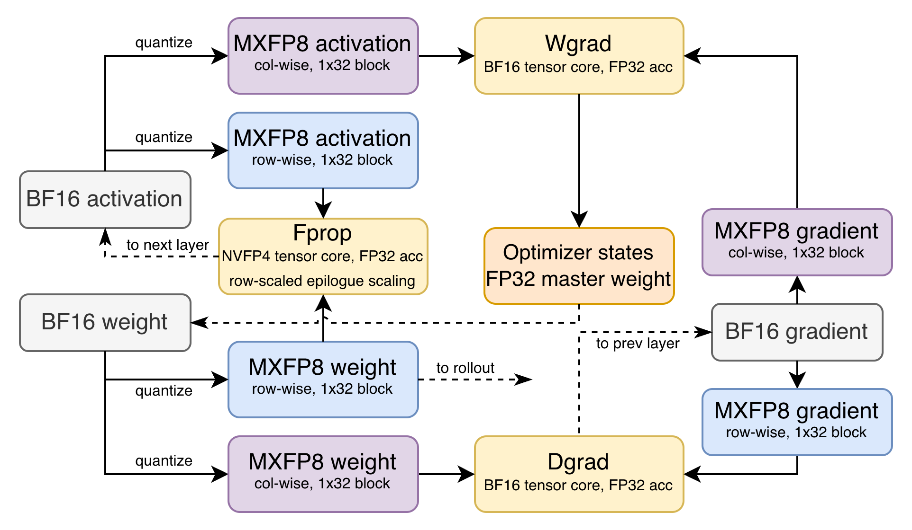
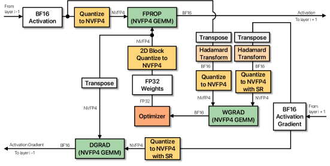
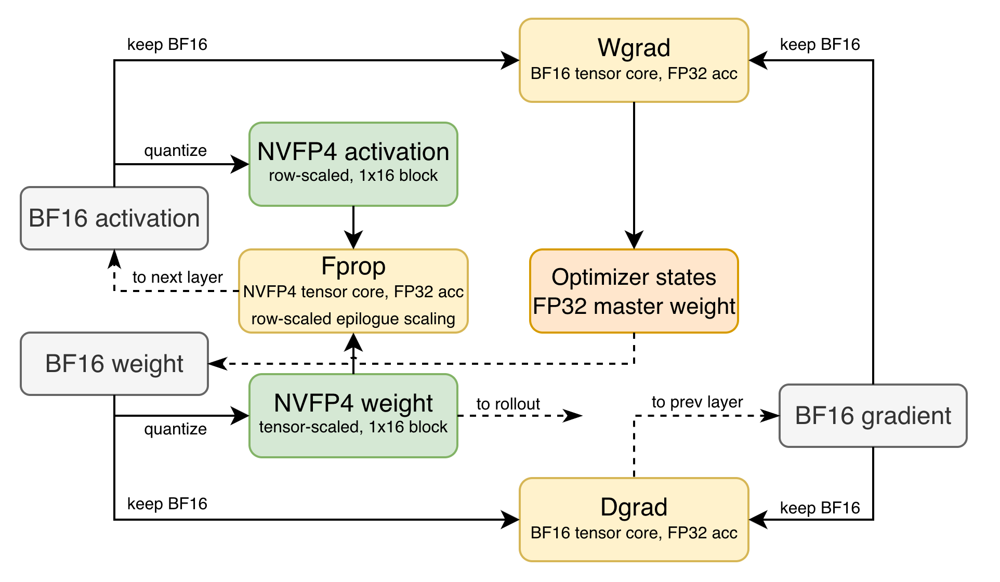
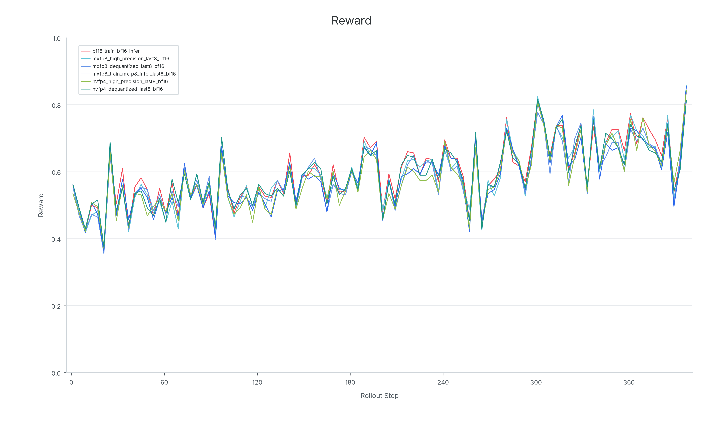
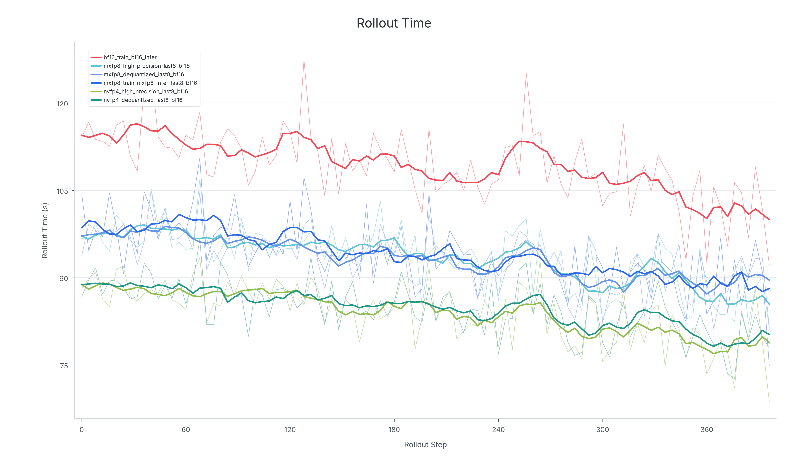
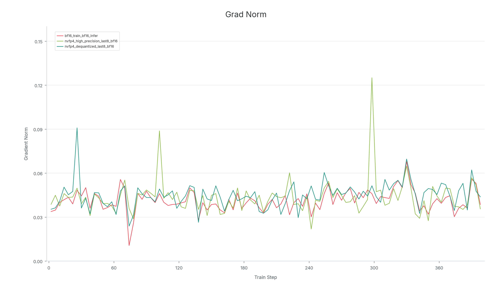

在低精度RL中，rollout、训练、checkpoint转换和实时权重更新必须统一于一个精度契约，否则采样器与训练器的策略将发生漂移。LMSYS在Miles中实现了两套Blackwell原生低精度方案：端到端MXFP8（覆盖rollout、前向、权重梯度和数据梯度GEMM）和per-token NVFP4（MoE专家路径使用每token在线激活缩放），两种格式都支持高精度或反量化反向模式。在8×B200上的Qwen3-30B-A3B消融实验中，BF16与所有五种低精度配置的原始奖励曲线高度重叠。这是Blackwell原生低精度RL在公共框架中的首次端到端实现。
先前的低精度方法并非围绕MXFP8或NVFP4设计。Miles现有路径遵循DeepSeek-V3风格的块缩放FP8方案：权重使用128×128块缩放，激活使用1×128 tile缩放，缩放在线计算。这是一个优秀的Hopper代方案，但在Blackwell上它的FP32缩放仍然在软件中围绕Tensor Core路径应用，而非通过原生的微缩放硬件。
INT4 QAT解决了另一个问题。训练使用伪量化适应INT4权重，rollout使用W4A16。虽然内存高效，但计算路径实际上仍在使用BF16激活加反量化INT4权重。NVFP4则能在B200上达到9 PFLOPS（FP4张量核心），Rollout、训练、Checkpoint、权重更新四者必须保持精度一致。
| GPU | BF16张量核心 | FP8张量核心 | FP4张量核心 | | --- | --- | --- | --- | | B200 | 2.25 PFLOPS | 4.5 PFLOPS | 9 PFLOPS | | B300 | 2.25 PFLOPS | 4.5 PFLOPS | 13.5 PFLOPS | | Rubin GPU | 4 PFLOPS | 17.5 PFLOPS | 35 PFLOPS |
MXFP8是一种微缩放FP8格式。每32个连续的E4M3值共享一个本地E8M0缩放因子，块是一维的。由于E8M0缩放表示2的幂，解码缩放通常向上取整，使块内最大值不被截断。

NVFP4是Blackwell的原生FP4格式。存储FP4 E2M1值，每16值块有一个FP8 E4M3缩放因子。E4M3比E8M0分辨率更细，缩放通常四舍五入到最近的可表示值。标准NVFP4方案还添加一个FP32全局缩放，形成两级层次结构：FP32张量缩放 × FP8块缩放 × FP4值。FP32缩放的scope选择是一个方案决策而非格式属性，在RL中尤为重要。
MXFP8方案是先前FP8工作的最直接Blackwell原生扩展。Rollout、前向、权重梯度GEMM和数据梯度GEMM全部使用MXFP8，选定的张量通过精度控制规则保留BF16。训练侧由TransformerEngine和Megatron实现，包括GB200 DeepSeek-V3优化路径。

与DeepSeek-V3 FP8方案的一个关键区别是反向激活的表示方式。DeepSeek-V3以前向激活以1×128 FP8 tiles存储，在反向GEMM前转置。TransformerEngine则物化行方向（1×32）和列方向（32×1）两份量化副本。虽然使用更多内存，但避免了额外的重量化步骤和量化误差：这是RL中典型的系统权衡。
Rollout侧，SGLang使用来自FlashInfer和Triton的Blackwell MXFP8核函数，几乎所有的GEMM都能量化到MXFP8。
NVFP4比MXFP8更激进，因此选择性应用。量化MoE专家：因为它们主导模型大小和rollout内存。以DeepSeek-V3为例，671B参数中MoE专家占656.5B（97.8%）。针对性量化专家就捕捉了绝大部分内存收益，而无需将所有层强制进入最激进的精度格式。
原始NVFP4预训练方案为大规模预训练设计，目标是在使用FP4 GEMM的同时保持粗略优化方向。它结合FP4线性层GEMM与多项稳定器：选定层保持高精度、权重缩放前后一致、使用随机舍入和随机Hadamard变换。但RL有不同的故障面：预训练梯度信号稳定、权重更新幅度大；RL梯度嘈杂、奖励高方差、有用更新微小而精细。必须将量化噪声保持在真实更新信号以下，否则它会覆写脆弱的能力并导致性能崩溃。

NVFP4 RL方案包含四项关键设计：MoE专家权重量化、每token激活缩放、一致的精度控制、使用可选原值或反量化操作数的BF16反向GEMM。
每token激活缩放： 两级NVFP4层次结构功能强大，但FP32激活缩放的范围必须精心选择。Per-tensor NVFP4缩放会使训练随batch变化，跨token缩放共享会泄漏未来token信息。方案因此为每个token在线计算一个FP32激活缩放：将异常值局限到单个token，去除静态校准伪影，并使SGLang rollout和Megatron训练使用相同的激活缩放范围。这一计算已融合到FlashInfer的激活量化核函数中。
Train-inference一致性还需要匹配并行度。如果FP32缩放是在expert-tensor-parallel分区内按token计算的，SGLang和Megatron应使用相同的ETP大小。SwiGLU MoE的gate和up投影通常融合为一次GEMM，二者必须共享同一FP32缩放：Miles通过在导出路径中联合量化gate/up对来强制执行。
高精度反向NVFP4变体： 前向和rollout使用NVFP4，反向GEMM使用原始的BF16操作数。反量化反向： 反向GEMM仍运行在BF16，但消费前向阶段产生的低精度操作数的BF16反量化版本。两种模式都避免低精度反向GEMM，因此不使用原始NVFP4预训练方案中的RHT或随机舍入：用反向吞吐换取更高精度计算，但RL通常以rollout为瓶颈。

内存收益显著： 高精度和反量化反向不需要生成和保留TransformerEngine默认低精度反向路径中使用的第二份列方向量化副本。在NVFP4线性层上，高精度反向模式相比默认减少72.60% 反向分配内存和70.39% 端到端分配内存。
相同的反向模式选择也适用于MXFP8。LMSYS将 `NVTE_BACKWARD_OVERRIDE` 实现并上游为一个可复用的TransformerEngine接口。
RL中，量化不匹配会跨权重更新累积。LMSYS将FlashInfer和TransformerEngine的量化器对齐到相同的MXFP8/NVFP4位级契约，FlashInfer单元测试在随机、边界、全零和最大值数据上检查精确字节级一致。为此设置 `FLASHINFER_DISABLE_FP4_QUANT_FAST_MATH=1` 禁用快速数学。
实践中单一的全局精度开关对低精度RL是不够的。LMSYS在Miles中实现了基于计数和名称的BF16例外机制（首层和末层保持BF16），跨checkpoint转换、Megatron训练、SGLang rollout和实时导出一致执行。保留最后15% 层在BF16能有效减少训练-推理不匹配。共享专家保持高精度也可减少不匹配，因为它们总是活跃，精度误差影响每个经过的token。
对于MLA模型，`kv_b_proj` 是一个重要的特殊情况。不同的MLA模式使用不同的收缩轴，而MXFP8使用一维微缩放块：更改收缩轴会改变哪些元素共享缩放。LMSYS将这些投影张量保留在BF16中。
所有实验使用同步GRPO风格训练在dapo-math-17k上，8个rollout样本/prompt，最大8192响应token。硬件分配：4 GPU rollout + 4 GPU训练。比较6种配置：BF16、MXFP8（端到端、高精度反向、反量化反向）、NVFP4（高精度反向、反量化反向）。

训练-推理不匹配： 两种低精度格式都比BF16更高，但数值在合理范围内。NVFP4的参考KL起点更高：这是相对于BF16参考模型的诊断指标，包含低精度策略与BF16参考之间的差异。

奖励曲线： 五种低精度配置全部紧密追踪BF16奖励曲线。这是消融实验的关键结果。
性能： MXFP8和NVFP4都减少了rollout时间。训练侧，MXFP8变体快于BF16，而NVFP4反向覆写变体在本实现中较慢：原因在于per-token FP32缩放作为独立PyTorch操作而非融合核函数运行，融合cuDNN前端核函数已上游但TransformerEngine集成待定。由于RL以rollout为瓶颈，rollout加速即使在前向路径未完全优化时也很有价值。
去除额外BF16权重副本： Megatron仍保存一份额外的BF16权重。`--fp4-param-gather` 尚不支持此方案使用的1D 1×16权重布局。

偶发梯度尖峰： 高精度反向NVFP4变体仍会出现偶发梯度尖峰，反量化反向减少最大尖峰但不消除。
权重更新接口重构： FlashInfer后端需要填充、混洗和特定布局，与训练侧的规范张量布局不兼容。Miles和SGLang致力于在保持高性能服务布局的同时使每个转换可验证。
参考：https://www.lmsys.org/blog/2026-07-29-mxfp8-nvfp4-rl